When the leaves start turning and there is a chill in the air, there is nothing better than gathering around the table with a big stack of colored paper and making something together. Fall construction paper crafts are one of the simplest ways to celebrate the season because everything you need is already in the craft drawer. No special tools, no expensive supplies, just colorful paper and a little imagination.
This list brings together 20 of the best fall construction paper crafts for kids, with ideas ranging from sweet little animals to harvest decorations you will actually want to display around your home. Every project on this list is beginner-friendly, low-mess, and realistic for a real weekday afternoon. 🍂
What You'll Need
Most of these fall construction paper crafts use the same small set of supplies, so a quick gather at the start will set you up for the whole list.
- Crayola Construction Paper (96 sheets, assorted colors), plenty of orange, red, yellow, and brown for all your autumn projects.
- Fiskars Training Scissors for Kids (ages 3+), safe blunt tips with an easy-grip handle that makes clean cuts simple for little hands.
- Elmer's Disappearing Purple Glue Sticks (30-count, washable), reliable and washable, perfect for all paper-to-paper bonding on these projects.
- DECORA Self-Adhesive Googly Eyes (800 pieces, assorted sizes), great for bringing foxes, owls, squirrels, and bears to life instantly.
- Crayola Ultra Clean Washable Markers (10-count), bold colors that work beautifully on construction paper and wash right off skin.
- Clear tape or washi tape, for securing folds on lanterns, garlands, and mobiles.
- Pencil, for tracing shapes before cutting.
20 Fall Construction Paper Craft Ideas for Kids
1. Construction Paper Fox
Cut a large orange triangle for the fox body, a smaller white triangle for the belly, and two small black triangles for the ear tips. Add a big fluffy white tail from a rounded white paper shape with an orange tip, and finish with googly eyes and a tiny black paper nose. Construction paper foxes are a fall favorite because they look adorable, they come together quickly, and even very young children can help glue on each piece. Stand them up on a folded tab at the bottom to create a little autumn display.
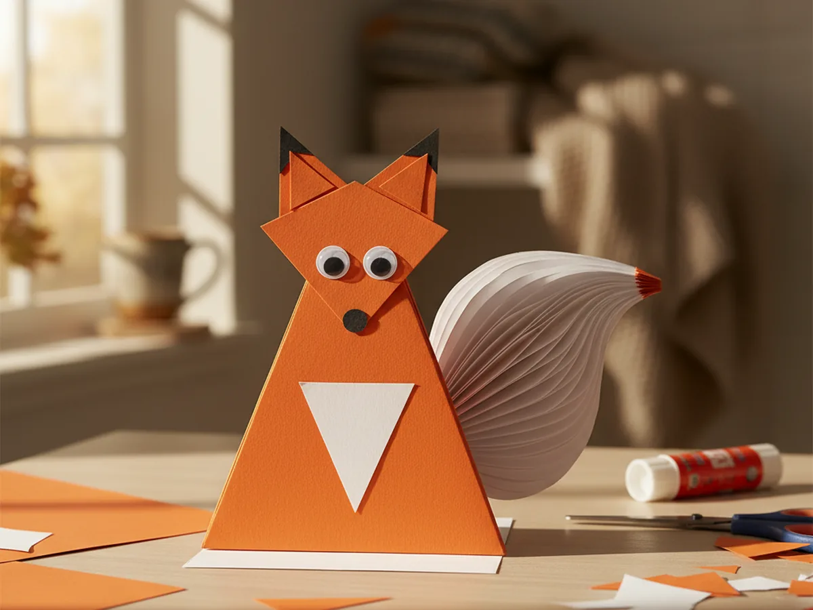
2. Construction Paper Turkey
Trace and cut a round brown circle for the turkey body, a small red wattle, a yellow beak, and a fan of colorful feathers from orange, red, yellow, and brown paper. Glue the feathers behind the body in a half-circle arc and add googly eyes for a fun finish. This is one of those classic fall construction paper crafts that children ask for every year. It makes a wonderful table centerpiece for a Thanksgiving spread or a cheerful window decoration.
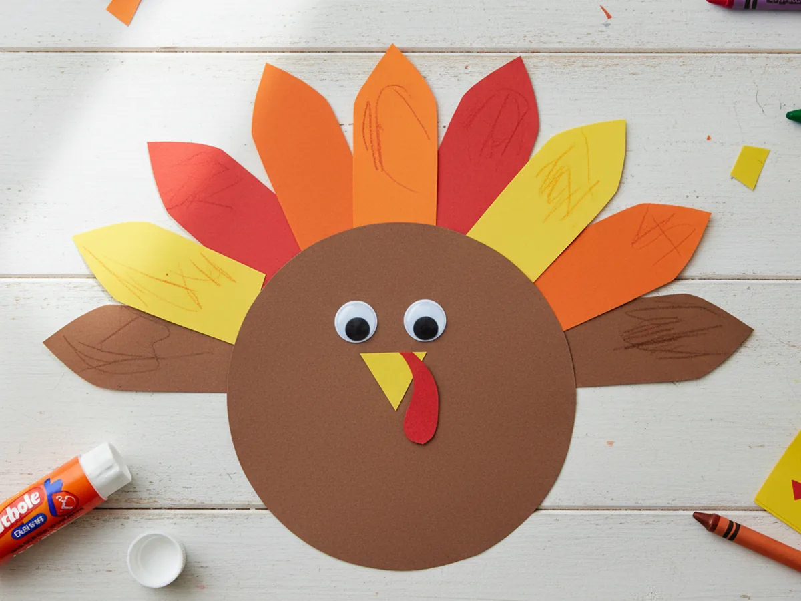
3. Construction Paper Apple
Cut a large red or green apple shape from construction paper, add a small brown rectangle stem and a tiny green leaf at the top. Inside the apple, draw or glue a white rectangle to look like the bitten flesh of the fruit. Construction paper apple crafts are wonderfully versatile: make a whole bushel in red, green, and yellow to decorate a fall table, or let each child personalize their apple with marker patterns and their name. This one is great for toddlers and preschoolers. 🍎
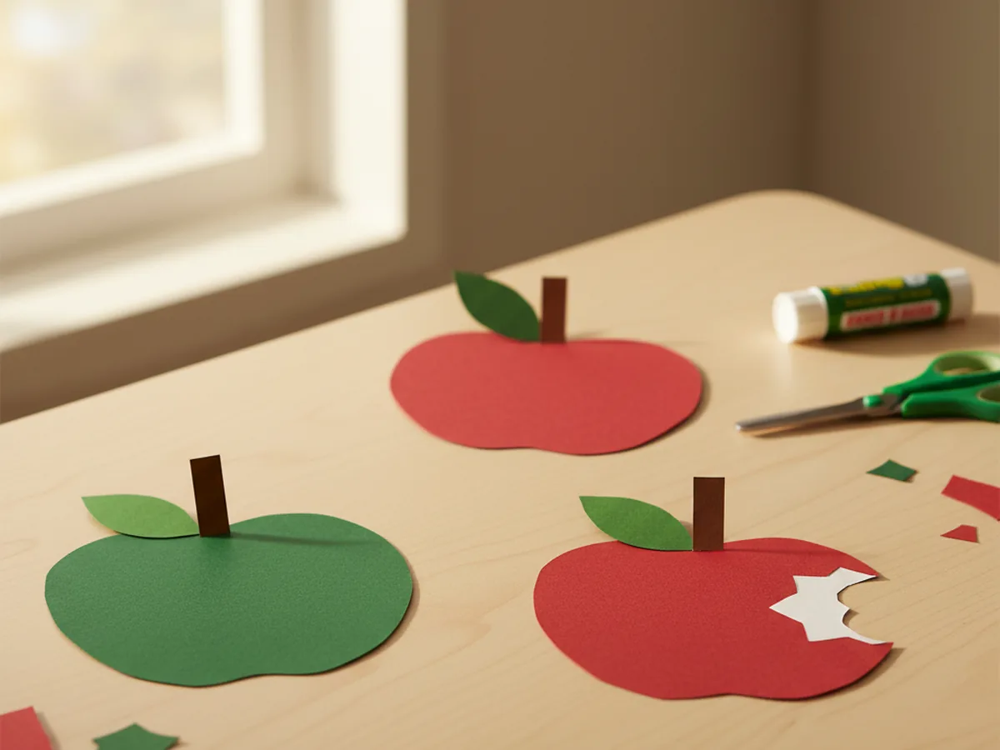
4. Construction Paper Mushroom
Cut a wide red or orange semicircle cap from construction paper and a short white rounded stem. Add small white circle spots to the cap and glue the whole thing together on a white background sheet. Fall construction paper mushrooms have that charming woodland feel that fits the season perfectly, and they are simple enough for even very young children to make with minimal adult help. Make a cluster of three in different sizes for an instant autumn display piece.
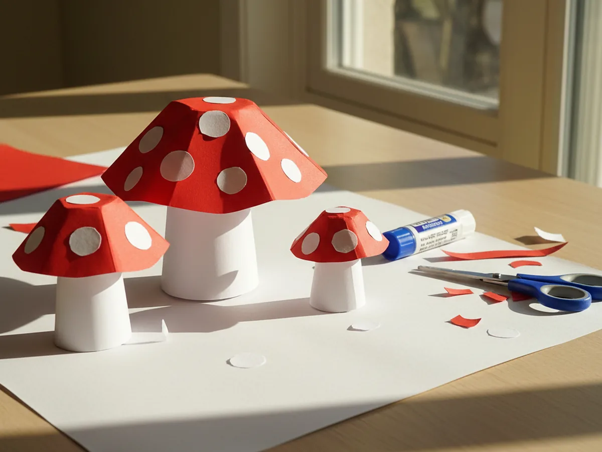
5. Construction Paper Squirrel
Cut a round grey or brown body, a small round head, two tiny ears, four short limbs, and a long bushy curved tail from construction paper. Add googly eyes, a tiny black nose, and a small paper acorn in the squirrel's paws for extra charm. This project is a great way to talk about animals preparing for winter while crafting together. Construction paper squirrels look especially cute displayed with paper acorns and autumn leaves on a bulletin board or classroom wall.
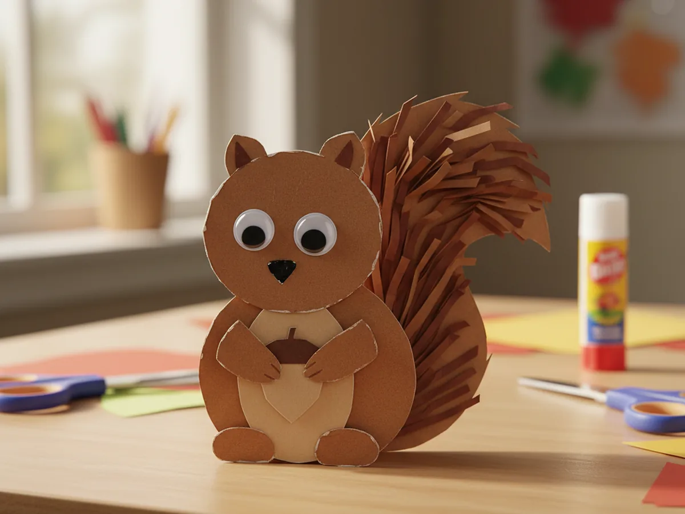
6. Paper Corn on the Cob
Cut a long oval cob shape from yellow paper, then punch out or cut small yellow, orange, and white circles to glue on as kernels in neat rows. Add two green husk shapes tucking in from the base. Paper corn on the cob is one of those satisfying fall construction paper crafts where the repetitive process of gluing kernel after kernel is genuinely enjoyable for older children. Make a bundle of three tied together with a strip of paper for a harvest centerpiece.
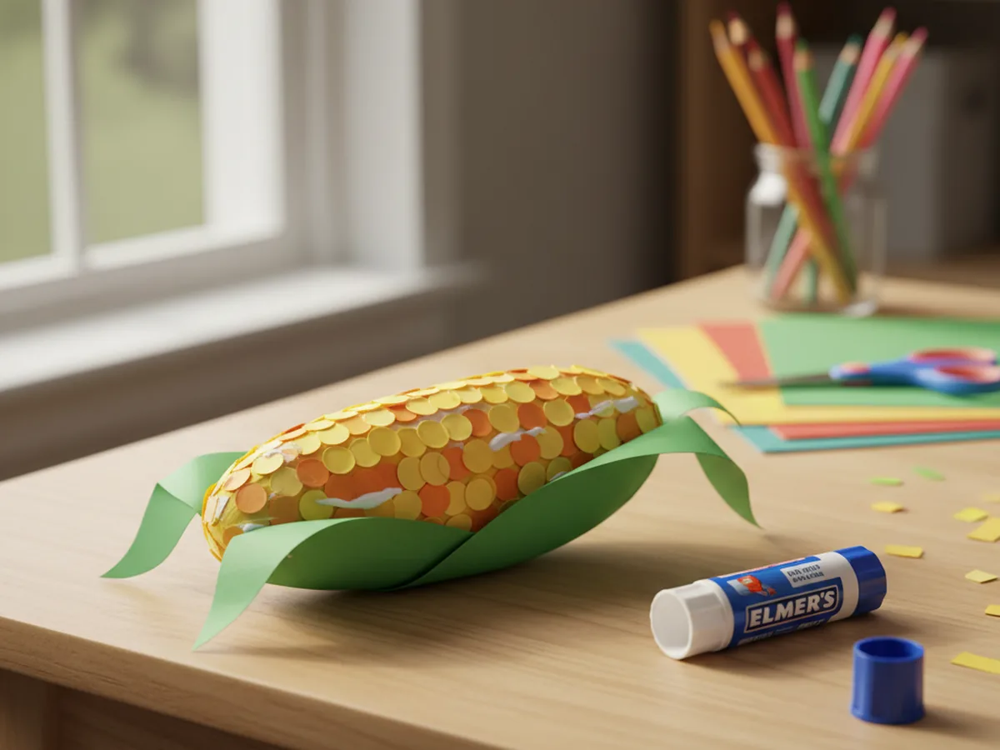
7. Construction Paper Candy Corn
Stack and glue three construction paper triangles in white, orange, and yellow to make classic candy corn shapes. Make a whole bowlful in different sizes and scatter them across a table, string them on a piece of yarn, or use them as Halloween party decorations. This is one of the quickest and most cheerful fall construction paper crafts for young children, and they absolutely love seeing the finished shapes look just like the real candy.
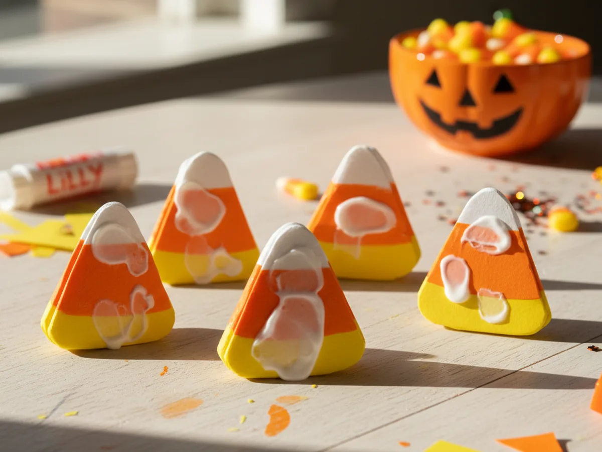
8. Construction Paper Sunflower
Cut a large yellow circle and a ring of long yellow petal shapes. Glue the petals evenly around the back of the circle center and add a brown or dark orange textured center by scrunching small torn paper bits and gluing them on. Attach a long green stem and two oval leaves. Construction paper sunflowers bring that warm late-summer-into-fall feeling that is hard to beat, and a whole bunch of them taped to a wall makes an instant, sunny room transformation.
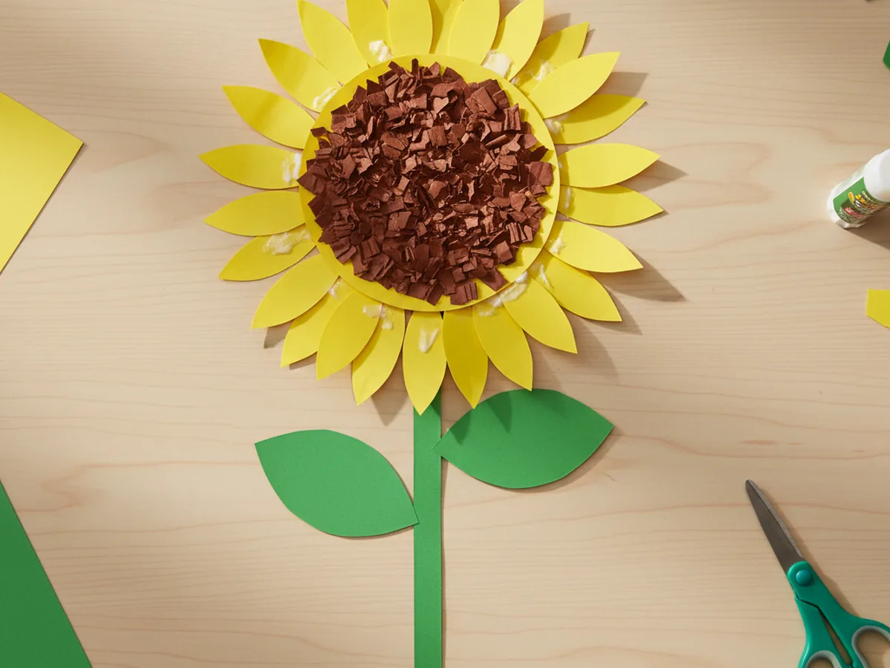
9. Construction Paper Crow
Cut a simple black bird body from dark construction paper, add a small yellow triangle beak, two twig-like feet, and two wing shapes folded slightly for a 3D effect. Mount the crow on a brown paper fence post or a stick branch for a fun Halloween-adjacent autumn decoration. Construction paper crows are a slightly offbeat choice that gives your display a spooky autumn edge without going full Halloween, making them perfect for the whole month of October.
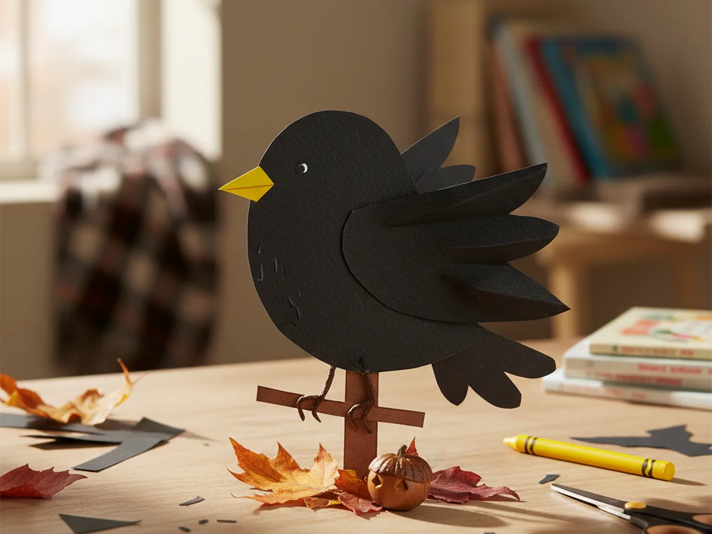
10. Construction Paper Harvest Basket
Weave strips of brown and tan construction paper together in a simple over-under pattern to form a basket base, then fold up the sides and glue or tape them in place. Fill the basket with small paper fruits and vegetables cut from other construction paper. This is one of the more satisfying fall construction paper crafts for children who enjoy hands-on repetitive work, and the weaving process is a wonderful fine motor skills activity for ages six and up.
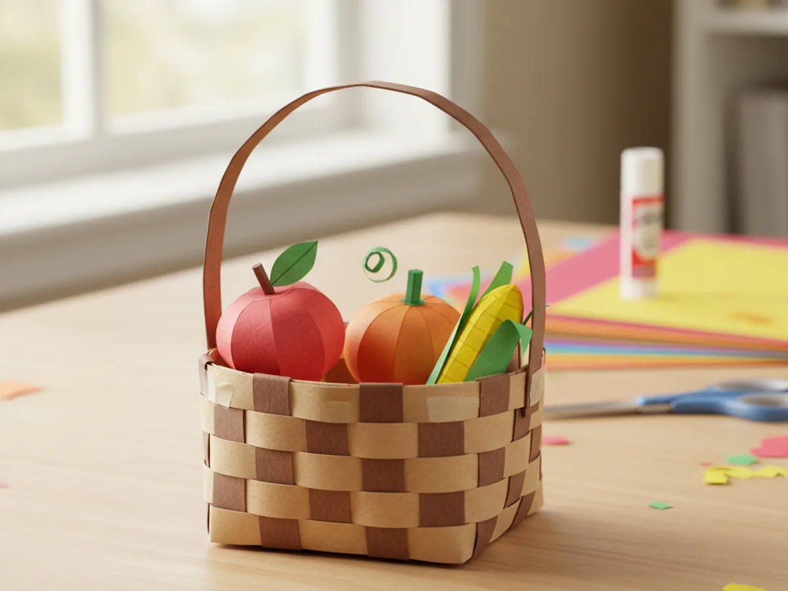
11. Construction Paper Pinecone
Cut an oval base shape from brown construction paper, then cut out small teardrop or scale shapes in varying shades of brown and tan. Glue the scales in overlapping rows starting from the bottom, working upward to create the layered look of a real pinecone. Construction paper pinecones look incredibly detailed for how simple the technique is, and they photograph beautifully in an autumn display alongside paper leaves and acorns.
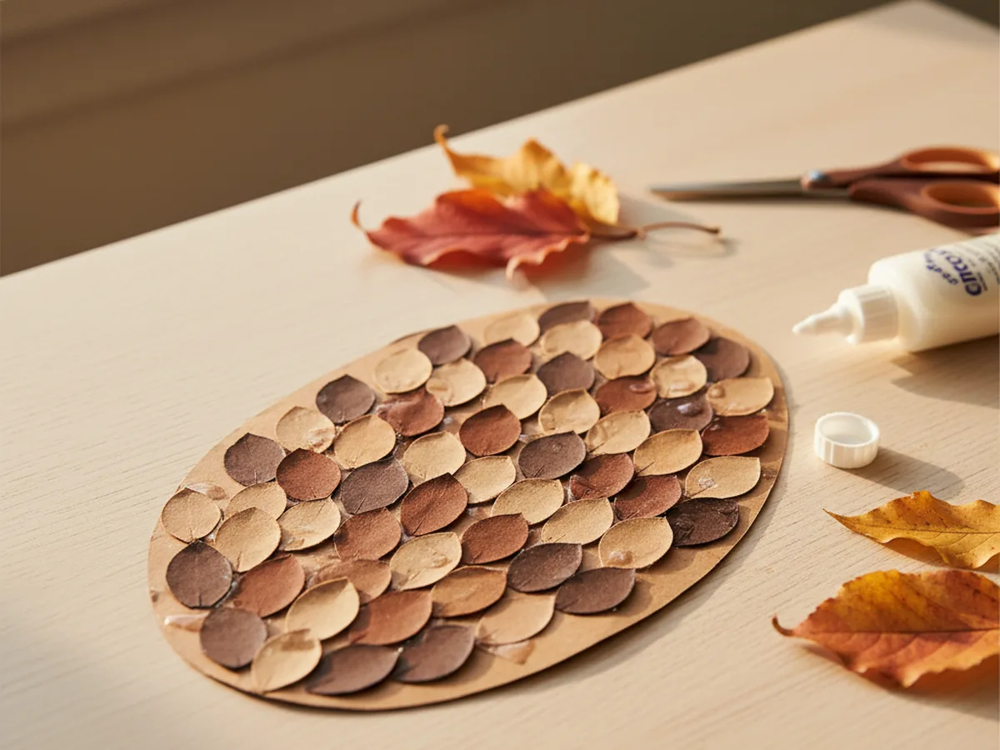
12. Paper Bear Catching Leaves
Cut a simple round bear face and body from tan or brown construction paper, add two small round ears, googly eyes, and a small snout circle. Then cut tiny autumn leaf shapes in orange and red and glue them around and on top of the bear as if they are floating down around it. Fall construction paper crafts like this one are especially sweet because they tell a little story, and children always love seeing their bear surrounded by a shower of colorful autumn leaves.
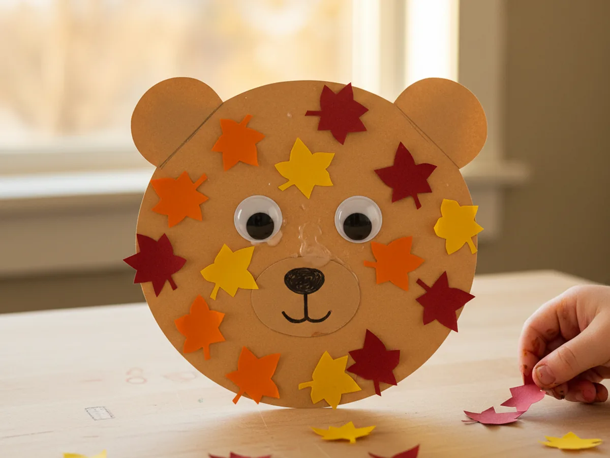
13. Construction Paper Pumpkin Lantern
Roll an orange sheet of construction paper into a cylinder and tape the edges together. Cut vertical slits up the side, stopping about an inch from both the top and bottom, then gently push the slits outward to create a rounded pumpkin shape. Add a brown paper stem on top and draw a jack-o-lantern face on the front. Place a small battery-powered tealight inside for a safe, glowing Halloween decoration that kids can make entirely on their own.
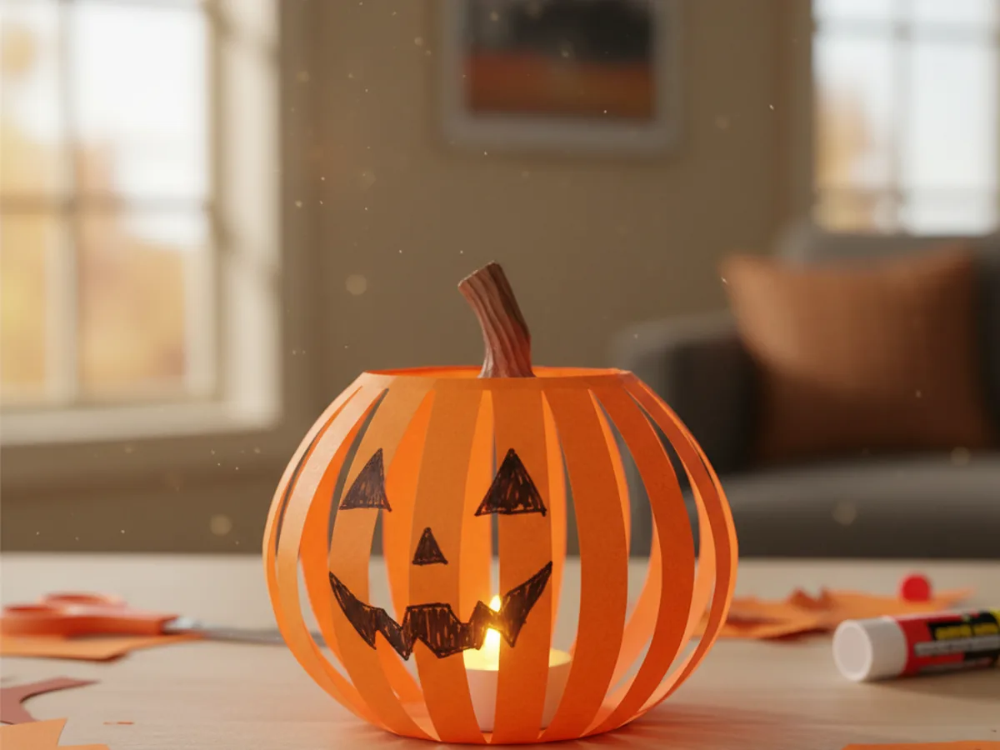
14. Construction Paper Leaf People
Trace a child's hand on autumn-colored construction paper and cut out the handprint. Add a small circle head at the top of the middle finger, draw on a face, and use the four remaining fingers as the arms and legs of a tiny leaf person. This is one of those joyful fall construction paper crafts that feels personal and imaginative, and children love creating whole families of leaf people in different colors and expressions.
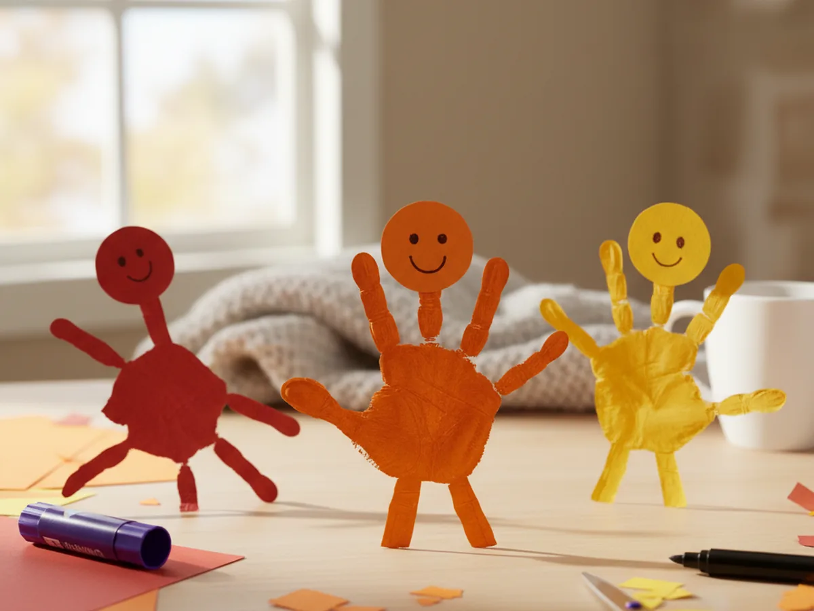
15. Paper Maple Leaf Bookmark
Fold a square of red or orange construction paper in half to form a triangle pocket, then fold the two outer corners in to meet the center and tuck one flap inside the other to create a corner bookmark. Glue a small maple leaf shape cut from a contrasting autumn color onto the front of the pocket. These fall construction paper bookmarks slip over the corner of any page and make a lovely handmade gift for teachers or grandparents alongside a good picture book.
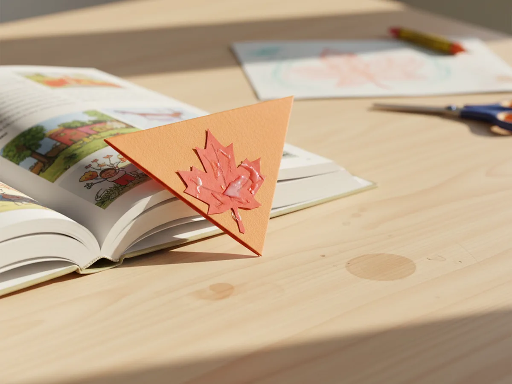
16. Construction Paper Snail with Leaf Shell
Cut a simple snail body shape from green or yellow-green construction paper and add two small antenna stalks with tiny circles on top. For the shell, cut a large spiral from a square of orange or red paper by cutting in a continuous curve from the outside to the center. Glue the spiral coil onto the snail body to create a beautiful leaf-patterned shell. This is one of the more creative fall construction paper crafts on this list and the spiral cutting technique is wonderfully satisfying for older children.
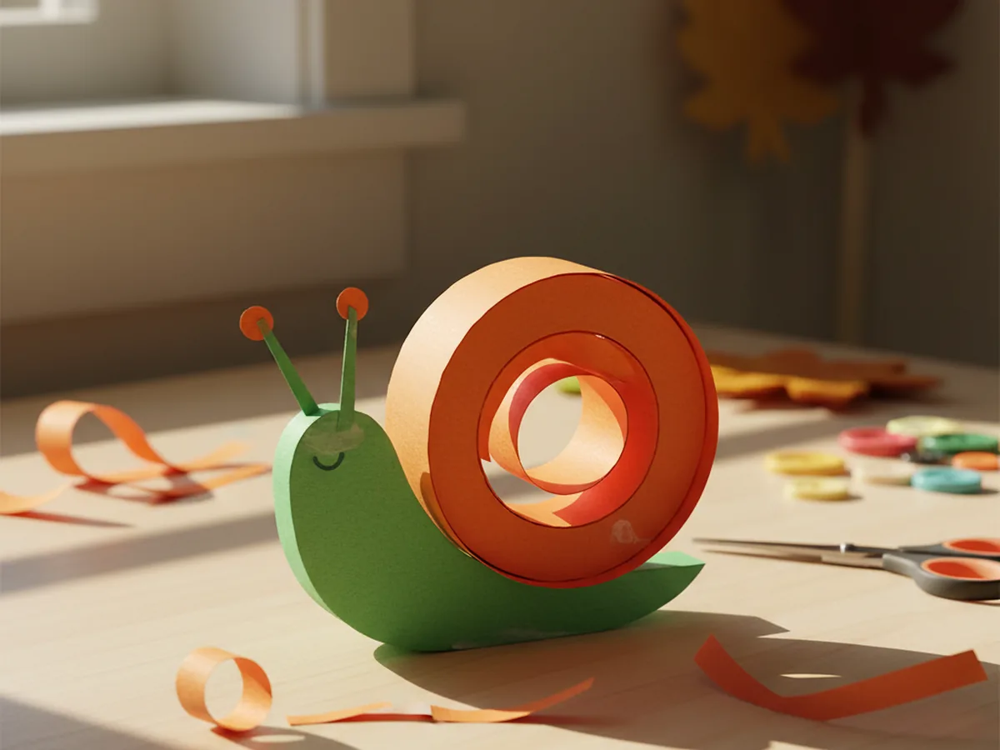
17. Construction Paper Owl with Feather Layers
Cut a large oval brown body and a round head. Then cut dozens of small teardrop or rounded shapes in brown, rust, and cream paper and glue them in overlapping rows all over the body to create layered feathers. Add large round white eyes with yellow circles inside, a small orange triangle beak, and two simple wing shapes on the sides. This feathered approach gives the owl real texture and depth, and it is one of the most visually striking fall construction paper crafts on this list.
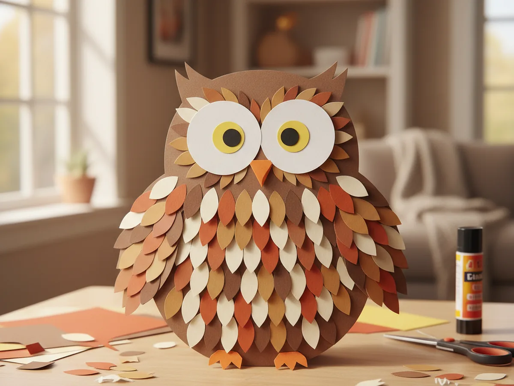
18. Construction Paper Turkey Headband
Cut a long strip of brown construction paper to fit around a child's head and staple it into a headband. Cut five large feather shapes in orange, red, yellow, and brown and fan them out at the back of the headband, stapling them firmly in place. Add a small paper turkey face with googly eyes and a red wattle at the front. These construction paper turkey headbands are a Thanksgiving party staple and kids love wearing them around the house all day long.
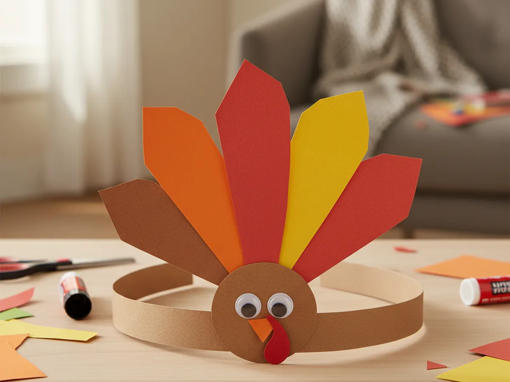
19. Construction Paper Acorn Garland
Cut out pairs of oval acorn caps in dark brown and smooth acorn bodies in tan or light brown. Glue them together and use a hole punch to make a small hole at the top of each cap. Thread the acorns onto a piece of yarn or string, spacing them evenly, and hang the garland above a mantel or across a window. A construction paper acorn garland is one of those autumn decorations that looks genuinely lovely once it is hung up, and even young children can cut and glue the shapes with minimal guidance. 🍁
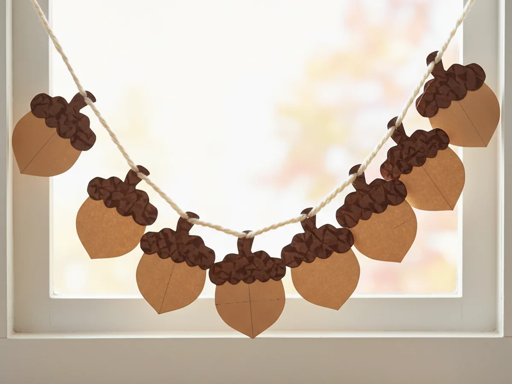
20. Construction Paper Falling Leaves Mobile
Cut out ten to fifteen leaf shapes from orange, red, yellow, and brown construction paper in a variety of sizes. Punch a hole at the top of each leaf and tie them at different heights onto four or five strings. Attach the strings to a twig or a wooden dowel for a beautiful hanging mobile. This is one of the most peaceful and meditative fall construction paper crafts to make together: the cutting is quiet and rhythmic, and the finished mobile sways gently and fills a room with autumn color.
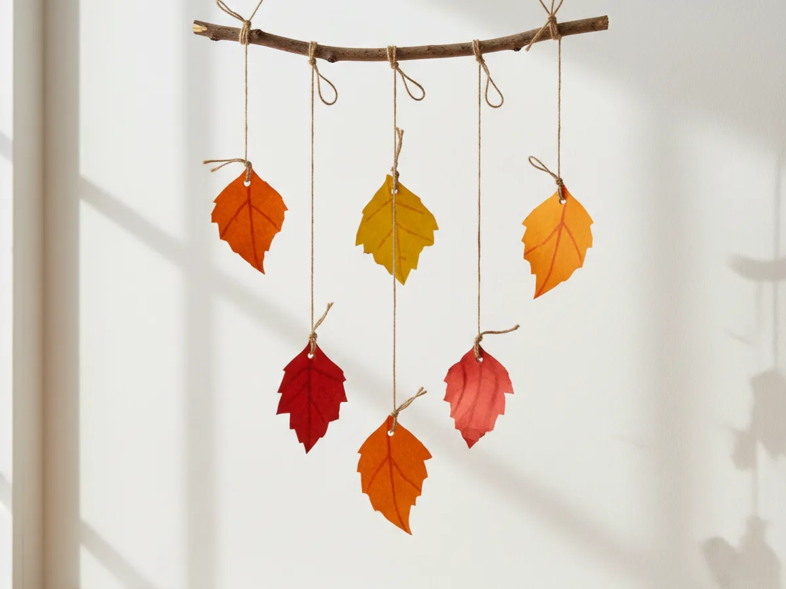
Final Thoughts
There is something wonderfully grounding about sitting down with a child, a pair of scissors, and a rainbow of autumn-colored paper. These 20 fall construction paper crafts are proof that the simplest materials can create the sweetest moments. Pick one idea that catches your eye today, clear a little space at the kitchen table, and enjoy the season together. The crafts are fun, but the time spent making them is what you will both remember.
More Crafts You'll Love
If you enjoyed these autumn projects, here are a few more ideas perfect for the fall season and beyond.
Happy crafting, and enjoy every cozy, colorful moment this autumn brings. 🍂